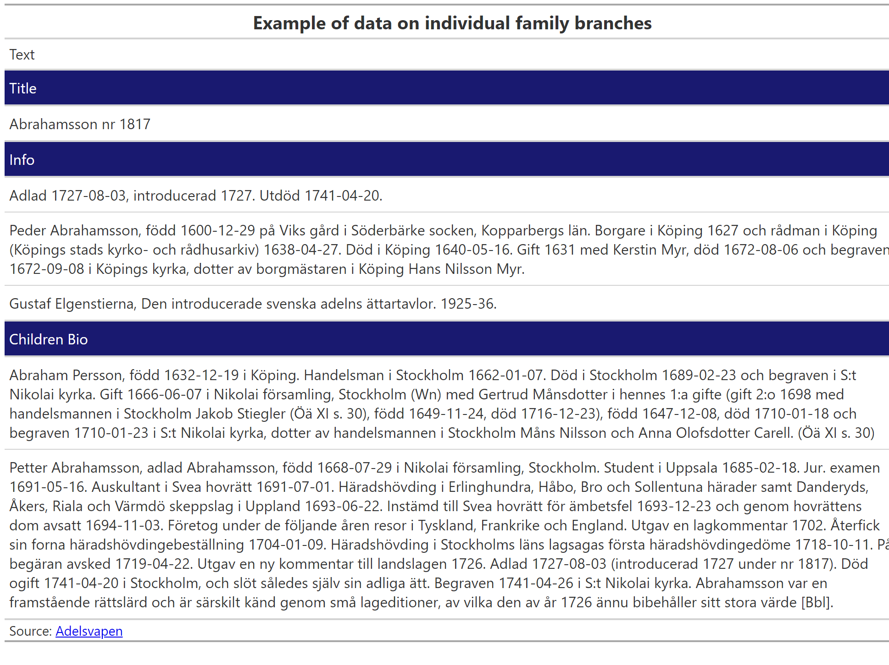

| Download data | |
Download the data
Purpose
Scraper of Adelsvapen genealogy website for noble families of Sweden.
Output
Click here to see what the data looks like.

Planning
This is what the website looks like:

And these are the pages with the information that we want to get, including:
- Name of the family
- Date of introduction into nobility and extinction
- The first person in the family and their biography
- The biography of their children
Ideally we would want to process this text in such way to keep the bolded names, and extract birth places and dates.

Robots.txt
First we check if they have asked us not to scrape the website.
robots.txt is a standard used by websites to indicate to visiting web crawlers and other web robots which portions of the website they are allowed to visit. This relies on voluntary compliance.
They have an extensive list of bots they do not allow, but do not forbid us from scraping the /genealogi subsection. So as long as we use a good wait time between hits so as not to overwhelm their server, we will be okay!

Starting point
We want to get a list of the noble families and a link to their family trees, as shown in the table below:
| Noble families of Sweden | |
| Source: Adelsvapen |
Branches
Next we want to scrape the links to the branches of family trees for each family. They look like this:
Ideally we would loop through the list and keep a record of each branch of the family tree with a link to it.
Code
# let's write a function to do this
library(rvest)
get_branches <- function(url_in) {
message("Getting branches of family tree from: ", url_in)
Sys.sleep(5)
html <- read_html(url_in)
family_links <- html %>%
html_nodes("a") %>%
html_attr("href")
family_links_filtered <- family_links %>%
as_tibble() %>%
rename(branch_url = value) %>%
# get family links that contain a /genealogi beginning and a number
filter(
str_detect(branch_url, "/genealogi/.+\\d"),
!str_detect(branch_url, "Adelsvapen-Wiki"),
!str_detect(branch_url, "Special:")
)
return(family_links_filtered)
}
noble_families_branches <- noble_families %>%
mutate(branches = map(url, possibly(get_branches, "failed")))
noble_families_branches %>%
unnest(branches) %>%
write_rds(here::here("links", "family_links.rds"))So now we have a link to each of the 2,335 branches of the family trees.
A sample of these is shown below in a table
| Sample of branches | |
| Noble family | Branch name |
|---|---|
Information on each branch of family tree
Next we want to get the data from each of these branches, including the title, information about the origin individual, and information on their children.
Code
# Again lets write a function for this
url_in = "https://www.adelsvapen.com/genealogi/Adlerstr%C3%A5hle_nr_1765"
get_info_from_family <- function(url_in) {
html <- read_html(url_in)
fam_abb <- str_remove(url_in, "https://www.adelsvapen.com/genealogi/")
title <- html %>%
html_nodes(".title") %>%
html_text()
bio <- html %>%
html_nodes("p") %>%
html_text() %>%
str_squish() %>%
as_tibble() %>%
rename(info = value) %>%
filter(str_detect(info, "\\d\\d\\d\\d")) %>%
nest(bio = everything())
children <- html %>%
html_nodes("ul") %>%
html_text() %>%
str_squish() %>%
as_tibble() %>%
rename(children_bio = value) %>%
filter(str_detect(children_bio, "\\d\\d\\d\\d")) %>%
# mutate(tab = 1) %>%
nest(children = everything())
# image
# img_src <- html %>%
# html_node(".image") %>%
# html_elements("img") %>%
# html_attr("src")
#
# img_url <- img_src %>% str_c("https://www.adelsvapen.com", .)
#
# download.file(img_url, destfile = here::here(glue::glue("scraped_images/{fam_abb}.jpg")), mode = "wb")
return(tibble(title, bio, children))
}
data <- get_info_from_family(url_in)
data %>%
write_rds(here::here("temp", "Abrahamsson.rds"))
data <- read_rds(here::here("temp", "Abrahamsson.rds"))
data %>%
unnest(bio) %>%
unnest(children) %>%
mutate(across(where(is.numeric), as.character)) %>%
pivot_longer(everything(), names_to = "Section", values_to = "Text") %>%
mutate(Section = str_to_title(str_replace(Section, "_", " "))) %>%
arrange(desc(Section)) %>%
distinct() %>%
group_by(Section) %>%
gt() %>%
tab_style(
style = list(
cell_fill(color = "#191970"),
cell_text(color = "white")
),
locations = cells_row_groups(groups = everything())
) %>%
tab_header(title = md("**Example of data on individual family branches**")) %>%
tab_footnote(md("Source: [Adelsvapen](https://www.adelsvapen.com/genealogi/Abrahamsson_nr_1817)")) %>%
gtsave(here::here("temp", "Abrahamsson_info.png"))
Images of family crest
We can also include the family crest:

Conclusion
To get the information on each of the family branches, we need to loop through our list of 2,335 branches. This will take some time - at 10 seconds of wait time between each hit - it is just more than 6 hours.
We also need to think about how to structure the data that we scrape before going through the whole scraping process.